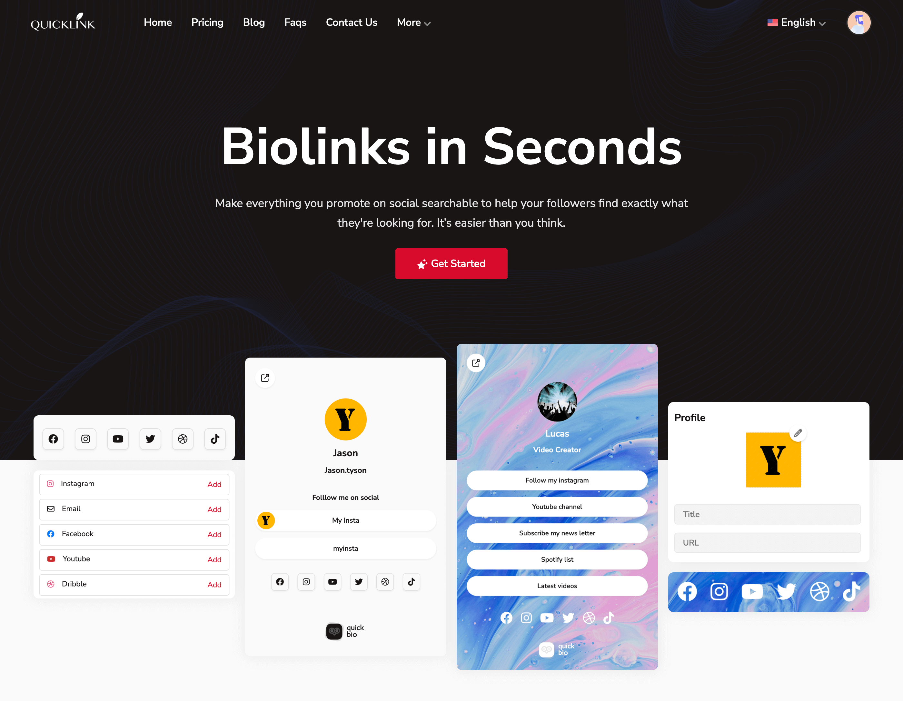
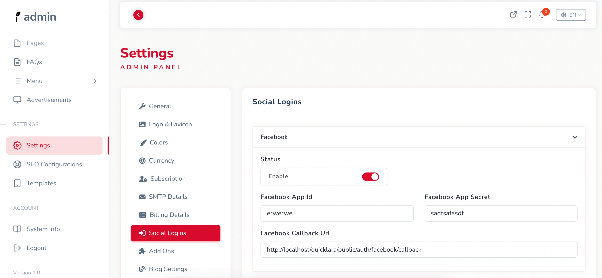

QuickBiolink Social Bio link tool Documentation
Version 1.0
Last Updated Documentation - 10 February 2024

Welcome
Thank you for purchasing QuickBiolink Social Bio link Laravel CMS. We covered almost everything in this document that how easily you can setup this script. If you have any questions that are beyond the scope of this help file, please feel free to use the free support forums.
Author : Bylancer.com
Demo : QuickBiolink Demo
Admin Panel : QuickBiolink Admin Demo
Social Login
Facebook
To enable Facebook Login you just need Facebook App ID and App Secret.
This is a how to getting Facebook App ID and App Secret. Check this link.
How To Setup A Facebook App And Get App ID And Secret

Google
To enable Google Login you just need Google App ID and App Secret.
This is a How to Create Google Developers Console Project. Check this link.
How to Create Google Developers Console Project
After getting App Id and App Secret, you have to setup your admin panel: